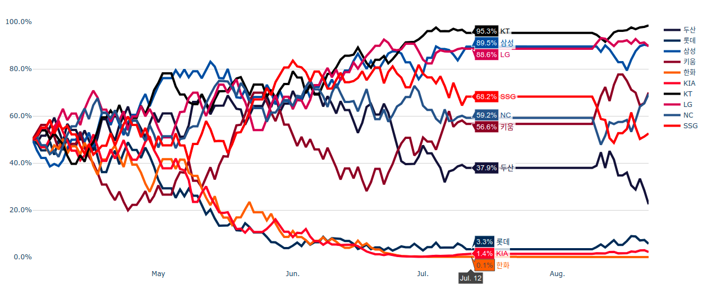
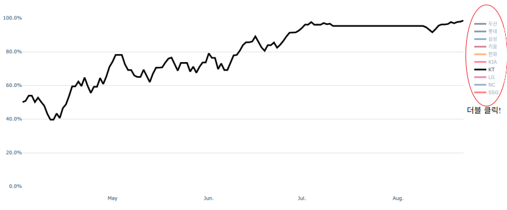
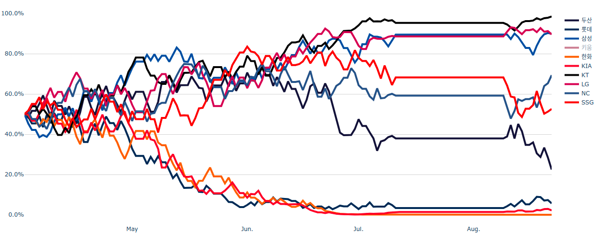
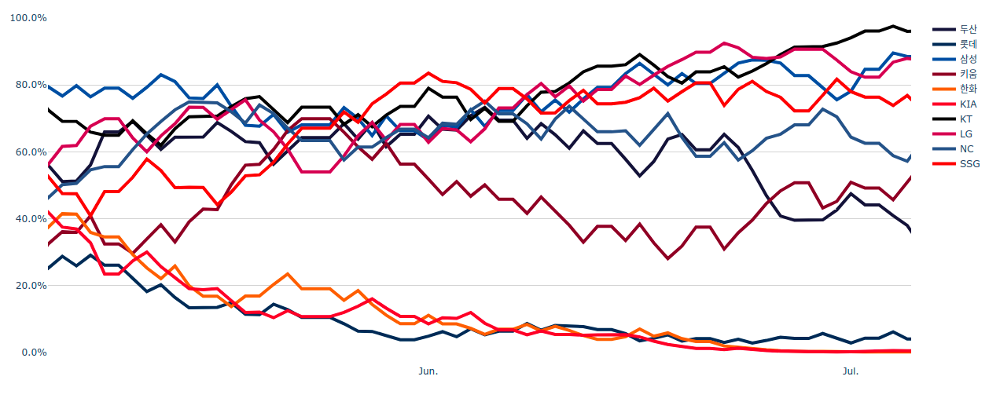

사용설명서
1. 커서를 옮기면 해당하는 날짜에 대한 각 팀별 포스트시즌 진출 확률을 확인 가능합니다.
2. 오른쪽 범례(Legend)를 더블클릭 하면 원하는 팀만 그래프에 나타나게 하실 수 있습니다. 원래대로 돌아가고 싶으시면 다시 더블클릭 하면 됩니다.
3. 오른쪽 범례를 한 번만 클릭하면 그 팀이 그래프에서 사라지거나 혹은 나타나게 할 수 있습니다.
4. 원하는 범위를 드래그하여 그래프를 확대 할 수 있습니다. 그 후 원래대로 돌아가고 싶으시면 그래프의 아무 곳이나 더블 클릭하면 됩니다.
